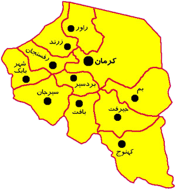

استان کرمان

کرمان در دورههای قبل از اسلام، "بوتیا" و "کارامانیا" بوده است. برخی عقیده دارند که کرمان دگرگون شده کلم «کریمان» است و عدهای نیز آن را مشتق از "کارمانیا" قدیم به معنی "جایگاه دلاوری و نبرد" ذکر میکنند. در
حالی که تواریخ عرب و یهود، "کرمان" را فرزند هیتال یا هپتال از نبیرههای نوح میدانند، کتب فارسی از طهمورث به عنوان جد وی یاد میکنند. هرودوت از شش نژاد فارسی نام میبرد که یکی از آنها "گرمانیان" است. مرکز
کرمان را در قدیم "گواشیر" و "بردشیر" میخواندند. "گواشیر" در اصل "کوره اردشیر"یعنی شهر اردشیر بوده که به تدریج "گواشیر" شده است.